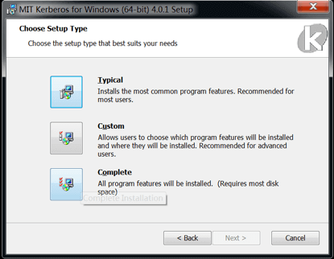
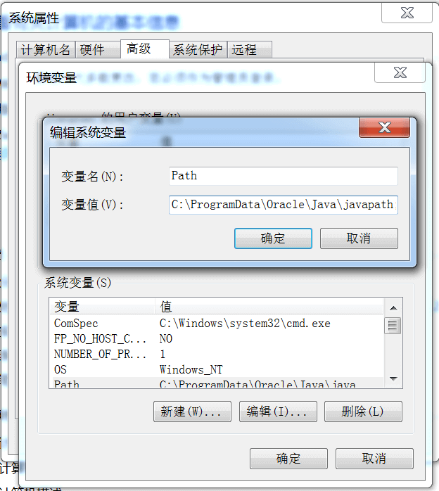
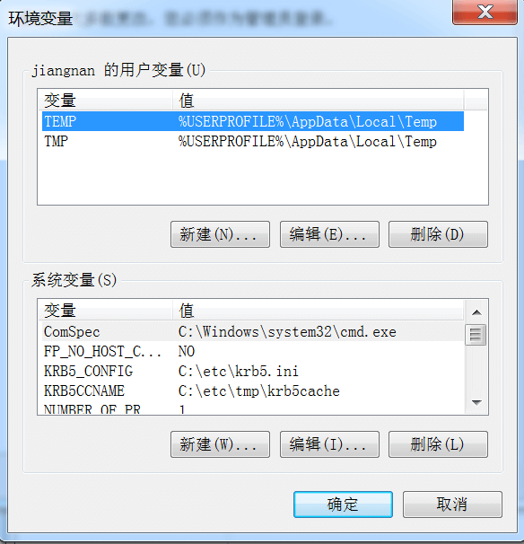
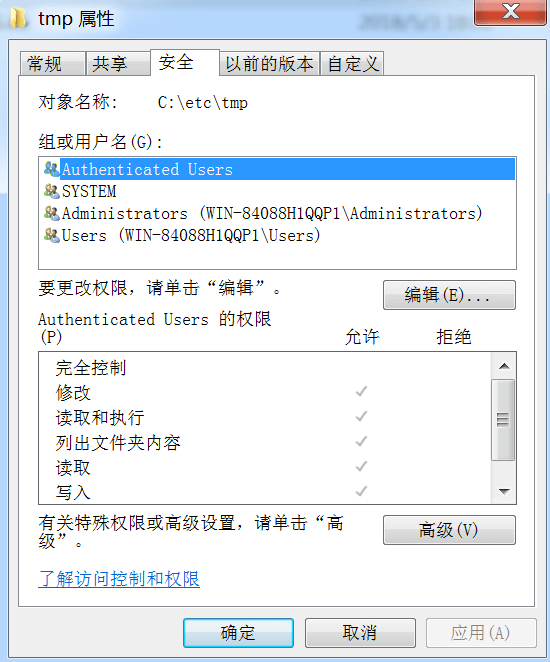
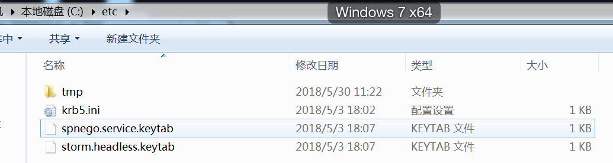
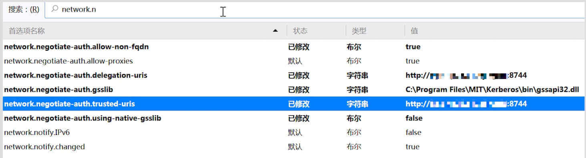
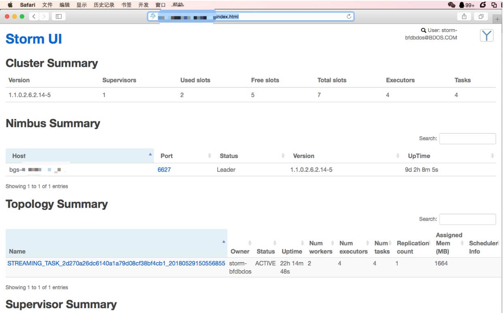
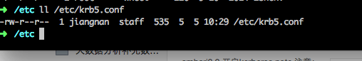
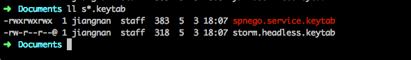
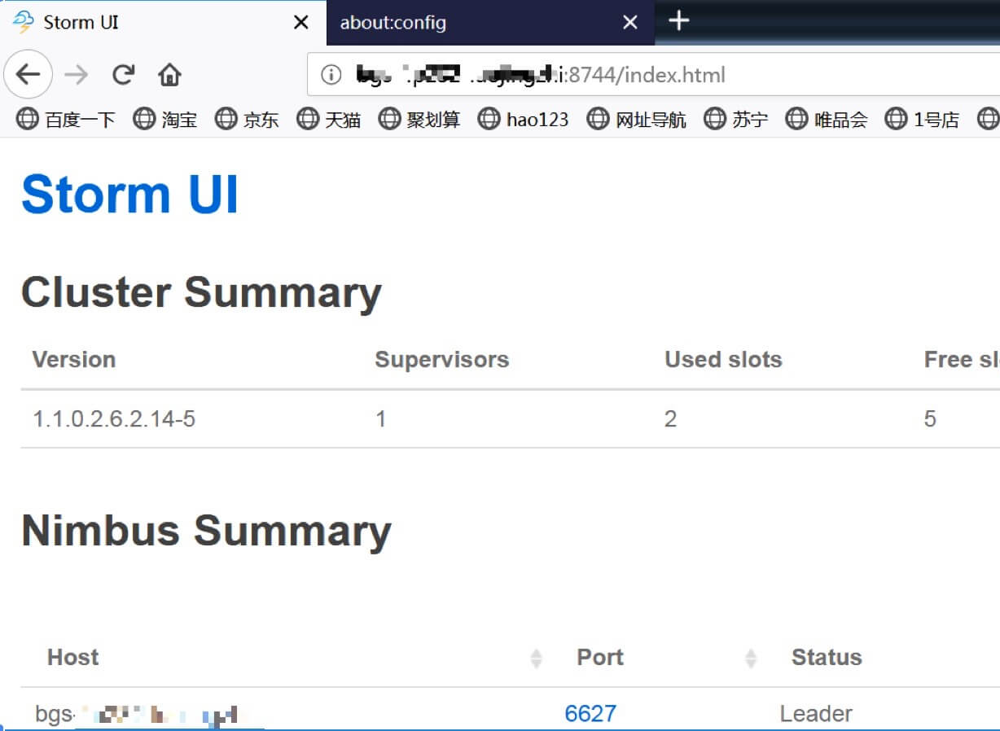

windows访问stormUI
前提：请确保hosts文件已经配置好
参考文档:
https://community.hortonworks.com/content/kbentry/28537/user-authentication-from-windows-workstation-to-hd.html
测试步骤：
安装MIT Kerberos客户端(windows版)
安装windows版火狐浏览器
在火狐中启用Kerberos支持
通过Kerberos客户端获得kerberos票据
通过火狐打开storm ui界面
安装MIT Kerberos客户端(windows版)
64位版下载地址：http://web.mit.edu/kerberos/dist/kfw/4.0/kfw-4.0.1-amd64.msi
安装的默认目录是C:\Program Files\MIT\Kerberos。
为避免意外使用complete模式安装,直接下一步即可。

添加环境变量
软件安装完成后它就自动的在 PATH 里面加上了自己的环境变量。
但是如果系统以及安装了oracle jdk ，那么oraclejdk里面也会带 kinit, ktab, klist 等软件，所以为了避免调用错误，将新建的kerberos环境变量放在前面。
如下： C:\Program Files\MIT\Kerberos\bin;C:\ProgramData\Oracle\Java\javapath; %SystemRoot%\system32;%SystemRoot%;%SystemRoot%\System32\Wbem; %SYSTEMROOT%\System32\WindowsPowerShell\v1.0\;
如图：可以手动将windows环境变量中的安装的mit放到最前面。

修改配置文件
将HDP集群的/etc/krb5.conf复制到一个目录（该用户有该目录的权限）下，改名为krb5.ini。
在windows下添加两个环境变量：
KRB5_CONFIG=C:\etc\krb5.ini
KRB5CCNAME=C:\etc\tmp\krb5cache
其中etc\tmp目录必须有写权限


使用keytab进行认证
hdp 集群中storm ui安装在100机器上，进入机器/etc/security/keytabs/目录
可以找到spnego.service.keytab、storm.headless.keytab
其中storm.headless.keytab对应princal 是storm-jn@JN.IN 对storm进行认证
spnego.service.keytab 对应princal 是HTTP/bgs-4p100-jiangnan@JN.IN
此处将这两个keytab下载到本地

在cmd中进行kinit操作
kinit -kt C:\etc\spnego.service.keytab HTTP/bgs-4p100-jiangnan@JN.IN
在火狐浏览器中验证
- 安装windows版火狐浏览器
注意！此处验证使用的是32位浏览器，64位浏览器目前无法通过下述方式验证成功 - 在火狐中启用Kerberos支持
参考 http://storm.apache.org/releases/1.1.2/SECURITY.html#ui-logviewer
https://docs.hortonworks.com/HDPDocuments/HDP2/HDP-2.6.4/bk_security/content/secure-storm-ui.html
firefox 浏览器,输入 about:config 修改如下配置项- network.negotiate-auth.trusted-uris = http://bgs-4p100-jiangnan:8744
- network.auth.use-sspi = false
- network.negotiate-auth.delegation.uris = http://bgs-4p100-jiangnan:8744
- network.negotiate-auth.using-native-gsslib = false
- network.negotiate-auth.gsslib = C:\Program Files\MIT\Kerberos\bin\gssapi32.dll
- network.negotiate-auth.allow-non-fqdn = true
如图：

- 打开火狐输入地址：http://bgs-4p232-luojingzhi:8744/index.html
如图

mac系统访问stormUI
前提，本地配置好集群host
配置环境
将HDP集群的/etc/krb5.conf 下载到本地，放置到/etc 目录下
如图：

使用keytab进行认证
hdp 集群中storm ui安装在100上，进入100 /etc/security/keytabs/
可以找到spnego.service.keytab、storm.headless.keytab
其中storm.headless.keytab对应princal 是storm-jn@JN.IN 对storm进行认证
spnego.service.keytab 对应princal 是HTTP/bgs-4p100-jiangnan@JN.IN
此处将这两个keytab下载到本地

使用kinit命令
kinit -kt storm.headless.keytab storm-bfdbdos
在safari浏览器中验证
打开safari输入地址：http://bgs-4p100-jiangnan:8744/index.html
如图
